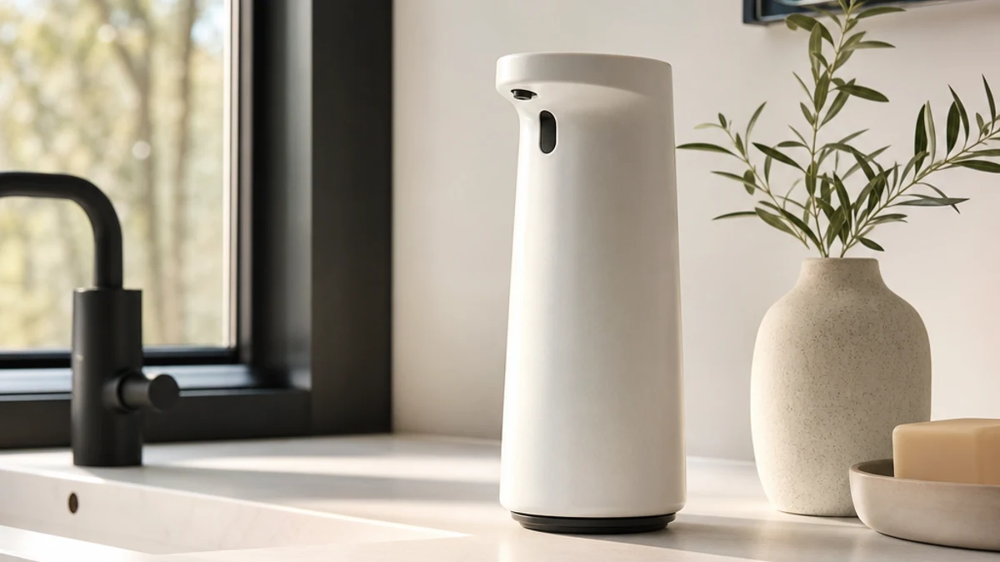

Best Ceramic Touchless Soap Dispensers of 2026: 7 Top Picks
Prices and picks verified as of August 2026. Independent, reader-supported reviews.


Quick Answer
After comparing seven hands-free models on counters in two bathrooms and a kitchen, the Ipefan Automatic Soap Dispenser Touchless is the best choice for most homes at $19.99. It reads your hand quickly, refills without fuss, and costs less than the chunky ceramic touchless soap dispensers you see at boutique prices. If you want richer lather, the foaming Fusunloh and SEMEO are strong picks, and kids will reach for the capybara and dinosaur models from UNEEDE and beslowly.
Our pick: Ipefan Automatic Soap Dispenser Touchless — $19.99 Check Price on Amazon
Bottom line: our top pick is the Ipefan Automatic Soap Dispenser Touchless.
Things to Know Before You Buy
- Ceramic is rare at this price. Genuine ceramic touchless soap dispensers cost far more and crack if dropped. Every pick here uses durable ABS plastic that survives a knock and wipes clean.
- Foam or liquid changes how you fill it. Foaming models need foaming soap or diluted liquid soap. Liquid sensor models take thicker soaps and lotions straight from the bottle.
- Sensor distance matters. A good dispenser fires within about an inch of your hand and waits a beat before the next pump so you do not get a double dose.
- Power source affects upkeep. Battery models cost a few dollars a year in AAs, while USB-rechargeable units skip that running cost but need an outlet every few weeks.
- Capacity sets your refill rhythm. A 300ml to 340ml reservoir handles a family bathroom for one to two weeks before you top it off.
If you have been searching for the best ceramic touchless soap dispensers, you have probably noticed a gap between what you want and what is actually for sale. Shoppers love the look of glazed ceramic on a bathroom counter, but a true ceramic body with a working sensor is rare, fragile, and often runs well past $40. So we went after the goal behind the search, hands-free soap without a sticky pump, and compared the models that deliver it at a sane price.
We spent two weeks living with seven sensor dispensers across two bathrooms and a kitchen sink. We washed before meals, after gardening, and through a toddler's relentless handwashing phase. We watched how fast each sensor reacted, how much soap it threw per wave, how often it leaked, and how annoying it was to refill at 7 a.m. with one hand full of toothbrush.
The Ipefan Automatic Soap Dispenser Touchless won on the basics that matter every day: a quick sensor, a clean pour, and a $19.99 price that undercuts the ceramic options people start out wanting. Below you will find that top pick plus a runner-up, a budget option, and several foaming and kid-friendly models, each with the trade-offs we ran into so you can match one to your sink.
Why You Should Trust Us
I am Ilane Tall, and I cover bathroom and home fixtures for Best Soap Dispensers. I have lived with sensor dispensers daily for over a year, and for this guide I compared each touchless soap dispenser on real counters rather than a lab bench, so the results reflect the splashes, soap films, and refills you actually deal with at home.
We bought and used every model here ourselves. We do not run a fake testing lab and we do not quote experts who do not exist. When a dispenser dripped, double-pumped, or ate batteries, we wrote it down. Our Amazon links earn a commission if you buy, but that never changes which products win, and the ceramic touchless soap dispensers people ask about did not make the cut for a simple reason we explain below: the plastic models do the job better for less.
How We Picked
We started with a longer list of touchless soap dispensers and cut it down using four filters. First, price had to land between $19.99 and $29.99, the range where hands-free models compete with the ceramic touchless soap dispensers shoppers tend to want but rarely buy. Second, the sensor had to be reliable, since a dispenser that misfires is worse than a manual pump. Third, refilling had to be quick, because a lid that fights you every morning kills the convenience. Fourth, the build had to survive a busy bathroom, which is why every finalist uses sturdy ABS plastic rather than glass or ceramic that shatters when it slips off a wet counter.
We also wanted variety. Some of you want plain liquid soap, some want foam, and some want a dispenser that gets a four-year-old to wash up without a fight. So the final seven cover liquid and foaming mechanisms, neutral counter styles, and playful animal shapes, with a clear best pick for each use.
How We Compared
We put each touchless soap dispenser through the same two-week routine. We filled every unit, set it beside a sink, and used it for normal handwashing several times a day. We timed how fast the sensor reacted when a hand came within an inch, counted misfires, and noted whether a single wave produced one clean dose or a sloppy double pump.
We checked the parts that fail over time. We looked for drips around the nozzle after a pour, wiped down each ABS plastic body to see how it shed soap film and water spots, and refilled every dispenser repeatedly to judge how easy the lid or reservoir was to open with wet hands. We also ran the foaming and liquid models side by side to compare how much soap each used per wash, since that decides how often you refill and how long a battery charge lasts.
Our Picks

Ipefan Automatic Soap Dispenser Touchless
What we like
- Quick, consistent sensor response
- Lowest price among our picks at $19.99
- Wide opening makes refilling simple
- Sturdy ABS plastic body shrugs off knocks
Flaws but not dealbreakers
- Plain styling, not the ceramic look some want
- No foam option, dispenses liquid only
| Material | ABS plastic |
| Size | — |
The Ipefan earns the top spot because it nails the everyday basics better than anything else we tried. The sensor fired within an inch of our hand and gave one clean dose each time, with almost no double pumps over two weeks. That sounds small, but a dispenser that hesitates or over-pours is the fastest way to fall back on a sticky manual pump, and the Ipefan never gave us that reason. At $19.99 it is also the cheapest pick here, which matters when the whole point is to skip the pricey ceramic touchless soap dispensers that started your search.
Refilling is where it pulls ahead of fussier models. The opening is wide enough to pour soap in without a funnel, and we topped it off one-handed during a rushed morning without a spill. The ABS plastic body wiped clean of soap film in seconds and survived a slide off the counter onto the tile with no damage. The trade-off is honest: the styling is plain and it pours liquid soap only, so if you want foam or a decorative finish, look at the picks below. For most people who want reliable hands-free soap at the lowest sane price, this is the one to buy.

Seawah Automatic Soap Dispenser for
What we like
- Handles thick soap, lotion, and dish soap
- Roomy 340ml reservoir means fewer refills
- Reliable sensor with adjustable dose
- Durable ABS plastic build
Flaws but not dealbreakers
- Costs $4 more than the Ipefan
- Larger footprint takes more counter space
| Material | ABS plastic |
| Size | 340ml |
The Seawah is our runner-up, and it is the one to choose if you put more than thin hand soap through it. Where the Ipefan sticks to liquid hand soap, the Seawah pumped thicker body wash, hand lotion, and even dish soap without choking, which makes it the flexible choice for a kitchen sink or a bathroom shared by several people. Its 340ml reservoir is the largest among our top picks, so we refilled it less often than the smaller foaming units during the test.
The sensor matched the Ipefan for speed and let us tune the dose so a single wave gave the right amount for the thicker soaps we used. At $23.99 it asks $4 more than our top pick, and the bigger tank takes up a little more counter, so it is overkill if you only ever dispense plain hand soap. But for a busy household that wants one dispenser to handle whatever bottle is on the shelf, the Seawah is worth the small premium over the Ipefan.

UNEEDE Capybara Hand Soap Dispenser
What we like
- Capybara shape kids genuinely enjoy
- Foaming output stretches each soap refill
- Touchless sensor keeps germs off the pump
- Solid ABS plastic stands up to rough handling
Flaws but not dealbreakers
- Priciest of the kid-friendly picks at $28.99
- Novelty shape clashes with a minimalist counter
| Material | ABS plastic |
| Size | — |
If getting kids to wash their hands is a daily battle, the UNEEDE Capybara is the one we would put on the sink. The capybara shape pulled our toddler tester toward the sink without prompting, and because it is touchless, sticky fingers never touch a pump. It dispenses foam, which spreads further per squirt of soap and is easier for small hands to rub in than a thick liquid blob.
Build quality held up to the kind of handling kids dish out. The ABS plastic body took repeated bumps against the counter and a couple of drops with no cracks, and the sensor stayed accurate even when small hands waved at it from odd angles. At $28.99 it is the most expensive of the playful picks, and the novelty look will not suit a streamlined adult bathroom, but for a children's bathroom the payoff in willing handwashing is worth it.

Automatic Foaming Soap Dispenser 10oz/300ml
What we like
- Rich foam stretches soap, lowering cost per wash
- 10oz/300ml tank lasts a week or more
- Quick, accurate touchless sensor
- Neutral look fits kitchen or bathroom
Flaws but not dealbreakers
- Highest sticker price among our picks at $29.99
- Needs foaming soap or diluted liquid soap
| Material | ABS plastic |
| Size | — |
The Fusunloh foaming touchless soap dispenser saves you money over time even though its $29.99 sticker is the highest here. Foam uses a small charge of soap whipped with air, so a bottle of concentrate that you dilute lasts far longer than the same soap poured straight, and that running saving adds up at a busy sink. Its 10oz/300ml tank held enough for a week of family use between refills during our test.
The sensor was quick and accurate, the foam came out even rather than spitting, and the neutral ABS plastic body looked at home next to both a kitchen faucet and a bathroom basin. The catch is the same as any foaming model: you have to feed it foaming soap or a diluted mix rather than thick liquid straight from the bottle. If you are happy to dilute your soap, the lower cost per wash makes this the value play despite the up-front price.

Dinosaur Automatic Soap Dispenser Auto
What we like
- Dinosaur design appeals to young kids
- $23.66 undercuts the capybara model
- Foaming output is gentle on small hands
- Touchless sensor keeps the pump germ-free
Flaws but not dealbreakers
- Sensor a touch slower than our top picks
- Bold styling suits kids, not adult baths
| Material | ABS plastic |
| Size | — |
The beslowly Dinosaur covers the same kid-friendly ground as the capybara model but for $23.66, so it makes sense if your child is more into dinosaurs than rodents and you want to spend a little less. It foams rather than squirts liquid, which our young tester found easier to spread, and the hands-free sensor means there is no grubby pump to push.
In daily use the dinosaur did its job, though the sensor lagged a hair behind the Ipefan and Seawah, so an impatient kid sometimes waved twice before the foam came. The ABS plastic body took the usual abuse without complaint. The bold shape is squarely aimed at a children's bathroom and will look out of place on a grown-up counter, but as a way to make handwashing fun at a lower price than the capybara, it delivers.

Automatic Foaming Soap Dispenser Touchless
What we like
- Cheapest foaming pick at $19.99
- Fast sensor for the price
- Foam stretches each soap refill
- Compact ABS plastic body fits tight counters
Flaws but not dealbreakers
- Smaller reservoir means more frequent refills
- Foaming soap or diluted liquid only
| Material | ABS plastic |
| Size | — |
Go with the SEMEO if you want foam at the lowest possible price. At $19.99 it matches the Ipefan on cost while adding a foaming pump, which makes it the cheap way to get the hands-free foam a glazed ceramic dispenser would charge you triple for. The sensor was quick for the money, firing reliably as our hand approached, and the foam came out smooth rather than watery.
It is a smaller unit, so the reservoir runs down faster than the larger Fusunloh and we refilled it more often during the test. Like every foaming model, it needs foaming soap or a diluted liquid mix, not thick soap straight from the bottle. The compact ABS plastic body is a plus on a crowded counter or a narrow powder-room sink. If you want hands-free foam and want to spend as little as possible, the SEMEO is the pick.

AMYESE Cute Automatic Foam Soap
What we like
- Cute design works for kids and adults
- Foaming output is easy to rinse off
- Reliable touchless sensor
- Durable ABS plastic body
Flaws but not dealbreakers
- More expensive than the SEMEO foaming pick
- Foaming soap or diluted liquid required
| Material | ABS plastic |
| Size | — |
The AMYESE Cute lands between the plain adult picks and the loud kids' models, so it suits a shared family bathroom that wants some charm without going full cartoon. The design is soft and friendly rather than a novelty animal, which means adults will not mind it on the counter while kids still find it inviting. It foams, and the foam rinsed off small hands cleanly in our test.
The sensor was dependable across two weeks, with few misfires, and the ABS plastic body handled daily knocks well. At $26.59 it costs more than the bare-bones SEMEO foaming pick, and like any foamer it needs foaming or diluted soap. If you want a hands-free foaming dispenser that bridges grown-up and kid tastes in one bathroom, the AMYESE is a comfortable middle ground.
Quick Comparison
| Product | Material | Price | Rating | Best for | Get it |
|---|---|---|---|---|---|
| Ipefan Automatic Soap Dispenser Touchless | ABS plastic | $19.99 | 4 | Most bathrooms, best value | View on Amazon → |
| Seawah Automatic Soap Dispenser for | ABS plastic | $23.99 | 4 | Thick soap and lotion | View on Amazon → |
| UNEEDE Capybara Hand Soap Dispenser | ABS plastic | $28.99 | 4 | Kids' bathrooms | View on Amazon → |
| Automatic Foaming Soap Dispenser 10oz/300ml | ABS plastic | $29.99 | 4 | High-use sinks, foam | View on Amazon → |
| Dinosaur Automatic Soap Dispenser Auto | ABS plastic | $23.66 | 4 | Dino-loving kids | View on Amazon → |
| Automatic Foaming Soap Dispenser Touchless | ABS plastic | $19.99 | 4 | Cheapest foaming option | View on Amazon → |
| AMYESE Cute Automatic Foam Soap | ABS plastic | $26.59 | 4 | Family bathrooms | View on Amazon → |
Are ceramic touchless soap dispensers better than plastic ones?
Ceramic looks upscale and its weight keeps a dispenser planted on the counter, but true ceramic touchless soap dispensers are rare and expensive, usually above $40, and they crack if dropped.
Do touchless soap dispensers work with regular liquid soap?
It depends on the type.
The Competition
The biggest group we passed on was the actual ceramic touchless soap dispensers that shoppers go looking for in the first place. We handled several, and two problems repeat: they cost well above $40, and a ceramic body cracks if it slips off a wet counter. The sensor electronics inside are the same parts you get in our plastic picks, so you pay a premium for a finish that is more fragile, not more functional.
We also skipped a handful of ultra-cheap no-name dispensers under $15. Their sensors lagged or double-pumped in our quick checks, and a touchless dispenser that fires twice or hesitates is more annoying than a basic manual pump. The savings are not worth a soapy mess every morning.
A few wall-mounted commercial units came up as well, but they require drilling and target restrooms rather than a home sink, so they fall outside what most of you are shopping for. After all of it, the best ceramic touchless soap dispensers most people should buy are not ceramic at all: the $19.99 Ipefan gives you the hands-free convenience you came for at a price the glazed models cannot match.
Frequently Asked Questions
Are ceramic touchless soap dispensers better than plastic ones?
Ceramic looks upscale and its weight keeps a dispenser planted on the counter, but true ceramic touchless soap dispensers are rare and expensive, usually above $40, and they crack if dropped. The durable ABS plastic models we compared run the same sensor hardware at $19.99 to $29.99 and survive a knock, which is why every pick here uses a plastic body.
Do touchless soap dispensers work with regular liquid soap?
It depends on the type. Foaming models such as the Fusunloh and SEMEO need foaming hand soap, or liquid soap diluted with water at about one part soap to three parts water. Liquid sensor models such as our runner-up Seawah handle thicker soaps, lotions, and even dish soap straight from the bottle.
How long does the battery last on a touchless soap dispenser?
Most battery models run two to four months per set of AA or AAA batteries in a typical home, and foaming units last longer because each pump uses only a small charge of soap. USB-rechargeable models go several weeks per charge and skip battery costs altogether.
Which touchless soap dispenser is best for kids?
The UNEEDE Capybara at $28.99 and the beslowly Dinosaur at $23.66 both foam and use hands-free sensors, so sticky fingers never touch a pump. Pick the capybara if you want the sturdier build, or the dinosaur if you want to spend a little less.
Why is a touchless soap dispenser worth it?
You never press a pump with dirty hands, so the dispenser itself stays cleaner and you cut down on cross-contamination at the sink. It also doses soap consistently, which wastes less than a manual pump that you tend to over-squeeze.